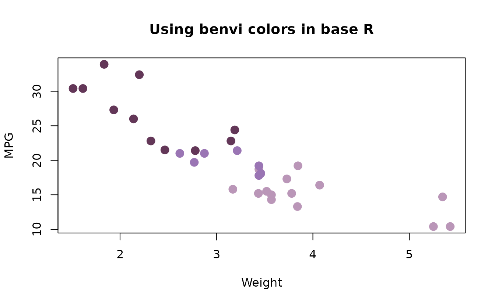

Introduction
benviplot provides color palettes and ggplot2 helper
functions tailored for EDA. The color underlying color schemes are based
on Benvi, a discontinued brand of Brazilian proptech QuintoAndar. This
package uses publicly available color schemes for data visualization
purposes.
Installation
The easiest way to install benviplot currently is
directly from GitHub.
# Install remotes if needed
if (!requireNamespace("remotes", quietly = TRUE)) {
install.packages("remotes")
}
# Install benviplot
remotes::install_github("viniciusoike/benviplot")Font Setup (Optional but Recommended)
benviplot uses the Poppins font family
from Google Fonts. Installing Poppins is optional - the
theme will automatically fall back to your system’s default font if
Poppins isn’t available.
One-Command Setup
Poppins is freely available at Google Fonts but you can also install
it with setup_benvi_fonts().
library(benviplot)
# One-time setup - installs Poppins and configures graphics
setup_benvi_fonts()This function additionally checks if ragg is installed
and provides guidance for RStudio configuration. If you’re running R
from Positron, no additional configuration is necessary.
Quick Start
While the package can work with base R plots, the recommended use is
together with ggplot2.
The basic usage of package is centered around the
theme_benvi() and scale_* functions.
ggplot(mtcars, aes(x = wt, y = mpg, color = as.factor(cyl))) +
geom_point(size = 3) +
scale_color_benvi_d(name = "Cylinders", pal_name = "qual_8") +
labs(
title = "Fuel Efficiency vs. Weight",
x = "Weight (1000 lbs)",
y = "Miles per Gallon"
) +
theme_benvi()
Viewing Color Palettes
Before using a palette, you can preview it.
# View a qualitative palette
benvi_palette("qual_2")
# View a sequential palette
benvi_palette("benvi_blue")
# Get hex codes as character vector
colors <- as.character(benvi_palette("qual_2"))General Examples
Bar Chart
For simple plots it’s easier to select colors using
benvi_palette and theme_benvi.
# Sample data
sales <- data.frame(
cities = c(
"São Paulo",
"Rio de Janeiro",
"Belo Horizonte",
"Porto Alegre",
"Curitiba"
),
revenue = c(125, 200, 150, 175, 80)
)
ggplot(sales, aes(x = cities, y = revenue)) +
geom_col(fill = benvi_palette("benvi_blue")[3], show.legend = FALSE) +
geom_hline(yintercept = 0) +
labs(
title = "Revenue by Product",
x = NULL,
y = "Revenue ($1000s)"
) +
theme_benvi() +
theme(panel.grid.major.x = element_blank())
Heatmap with Continuous Colors
Even though the Benvi palettes are discrete, applying them to a continuous variable still works.
# Sample data - Texas housing
housing <- subset(txhousing, city %in% c("Austin", "Houston", "Dallas"))
ggplot(housing, aes(x = date, y = city, fill = log10(median))) +
geom_tile() +
scale_fill_benvi_c(
pal_name = "benvi_blue",
name = "Median\nPrice ($)",
direction = -1) +
labs(
title = "Median House Prices in Texas Cities",
x = "Year",
y = NULL
) +
theme_benvi()
Using Plot Helper Functions
benviplot includes convenience functions for common plot
types. These save typing during exploratory data analysis. These
functions come with several changes to default ggplot2
values. The first example shows a simple line plot using the
economics dataset.
plot_line(economics, x = date, y = uempmed)
The plot generated above is essentially a wrapper around other
ggplot2 functions as arguments.
# Makes the same plot as the one above
ggplot(economics, aes(x = date, y = uempmed)) +
geom_line(lwd = 1, color = benvi_palette("benvi_blue", 1)) +
geom_hline(yintercept = 0) +
labs(x = NULL) +
theme_benvi()The helper functions include several convenient arguments such as
text that add text labels on bar plots.
plot_column(sales, x = cities, y = revenue, text = TRUE)
These functions also support using aesthetics as grouping variables
under a generic variable alias.
plot_scatter(
mtcars,
x = wt,
y = mpg,
variable = as.factor(cyl),
palette = "qual_8",
scale_name = "Cylinders"
)
Finally, helper functions return ggplot2 objects, so you
can add layers normally.
plot_line(economics, x = date, y = unemploy / 1000) +
geom_smooth(se = FALSE, color = benvi_palette("oranges")[3]) +
labs(
title = "US Unemployment with Smoothed Trend",
subtitle = "Unemployment figures in millions",
x = "Year",
y = "Unemployed (millions)",
caption = "Data: economics dataset"
)
Can I use benvi colors in base R plots?
You can use benvi colors normally in base R plots. However,
replicating ggplot2 functionality might be challenging.
colors <- as.character(benvi_palette("purples"))
plot(
mtcars$wt,
mtcars$mpg,
col = colors[mtcars$cyl / 2 - 1],
pch = 19,
cex = 1.5,
xlab = "Weight",
ylab = "MPG",
main = "Using benvi colors in base R"
)
Next Steps
-
Explore all palettes: See
vignette("color-palettes")for complete gallery. -
Learn plot functions: Check
vignette("plot-functions")for detailed examples. -
Customize themes: Read
vignette("themes-and-styling")for advanced styling.
Getting Help
-
Function documentation:
?benvi_palette,?scale_color_benvi_d, etc. - Package website: https://viniciusoike.github.io/benviplot/
- Report issues: https://github.com/viniciusoike/benviplot/issues
- Ask questions: Open a GitHub discussion.
Happy plotting!